Aquella vez · Manual de español
Unidad 9
Órdenes, comparaciones y misterios

¡Haz lo que te digo!
Lee el texto y contesta
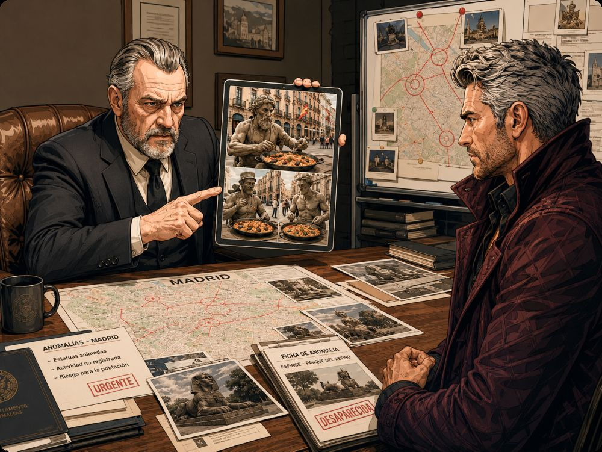
Dimitri PetrovichAgente especial, ven aquí. Tenemos un problema en Madrid.
Agente especialSí, señor Petrovich. ¿Qué pasa?
Dimitri PetrovichHay muchas anomalías en la ciudad. Mira este informe.
Agente especial¿Anomalías? ¿Dónde?
Dimitri PetrovichEn el centro, en las plazas y en el Parque del Retiro. Algunas estatuas cobraron vida.
Agente especial¿Las estatuas caminan?
Dimitri PetrovichSí. Y no solo caminan. También comen paella por la ciudad.
Agente especialEso es muy extraño.
Dimitri PetrovichClaro que es extraño. Escucha bien. Ve a Madrid ahora mismo.
Agente especialSí, señor. Voy a ir a Madrid.
Dimitri PetrovichBusca las estatuas. Habla con ellas. No corras. No grites. Sé tranquilo.
Agente especialEntendido. Voy a buscar las estatuas y voy a hablar con ellas.
Dimitri PetrovichAdemás, la esfinge del Parque del Retiro se escapó.
Agente especial¿La esfinge se escapó?
Dimitri PetrovichSí. Encuéntrala. Llévala al parque. Y cierra la puerta mágica.
Agente especialVoy a encontrarla, voy a llevarla al parque y voy a cerrar la puerta mágica.
Dimitri PetrovichMuy bien. Pero ten cuidado. Madrid parece normal, pero no lo está.
Agente especialNo se preocupe, señor Petrovich. Voy a hacer todo.
Dimitri PetrovichEntonces sal ahora. Toma el informe, llama si hay problemas y no pierdas tiempo.
Agente especialSí, señor. Voy a salir ahora. Voy a tomar el informe y voy a llamar si hay problemas.
Dimitri PetrovichPerfecto. Y una cosa más: no comas paella con las estatuas.
Agente especialDe acuerdo. No voy a comer paella con las estatuas.
EjercicioPreguntas
- ¿Quién habla con el agente especial?
- ¿En qué ciudad hay muchas anomalías?
- ¿Qué pasó con algunas estatuas de Madrid?
- ¿Qué comen las estatuas por la ciudad?
- ¿Dónde hay anomalías?
- ¿Qué animal de piedra se escapó del Parque del Retiro?
- ¿Qué debe buscar el agente especial?
EjercicioRelaciona las órdenes que Luis da a las estatuas
Observa los seis cuadros. Después, relaciona cada imagen con la orden correcta.
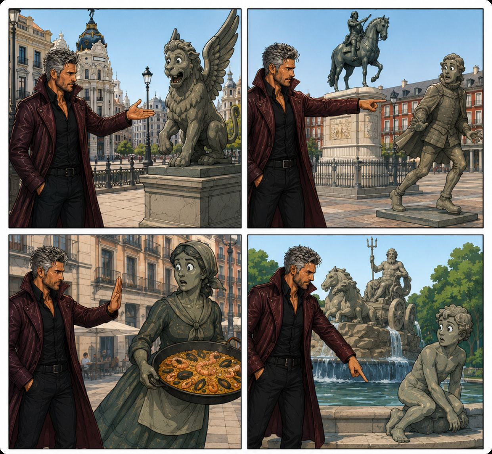
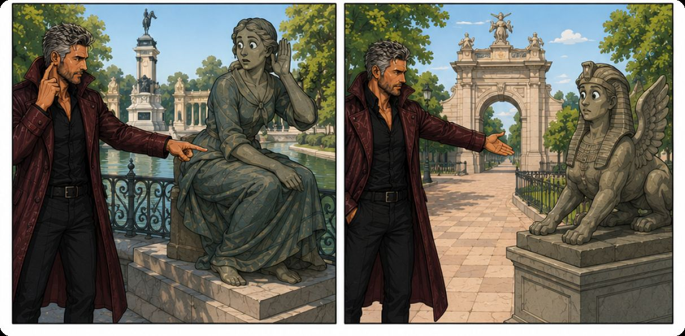
Órdenes:
- a. Deja de moverte.
- b. Quédate en tu lugar.
- c. Camina despacio.
- d. Escucha con atención.
- e. Regresa al parque.
- f. Busca tu pedestal.
- g. Habla más bajo.
- h. Mira el mapa.
- i. Espera aquí.
- j. Ayuda a tus compañeros.
- k. Cierra la puerta mágica.
- l. Dame una porción.
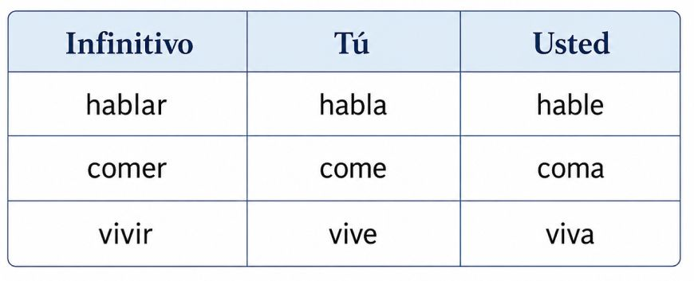
EjercicioDa órdenes con tú
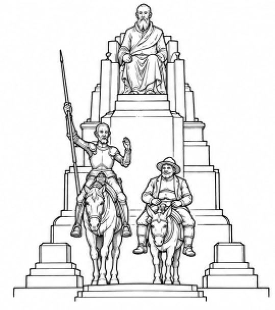
Mira la situación y da una orden a tu compañero.
Ejemplo: La ventana está sucia. → ¡Lava la ventana!
La mesa está sucia. →
La puerta está abierta. →
El mapa está en el suelo. →
La estatua está lejos del parque. →
El libro está cerrado. →
La paella está fría. →
¡No compares!
Lee el diálogo y contesta las preguntas
MarcosAlicia, ¿qué novela de Robert Fader te gusta más: El misterio de los Fader o Presentimiento?
AliciaA mí me gusta más El misterio de los Fader. Me parece más misteriosa y más familiar.
Marcos¿Más familiar?
AliciaSí. En esa novela hay secretos de familia, personajes cercanos y muchos detalles que parecen pequeños, pero son importantes.
MarcosEntiendo. Pero a mí me gusta más Presentimiento. Es más intensa.
Alicia¿Por qué?
MarcosPorque la historia ocurre después de una catástrofe global. Robert quiere construir una fortaleza y crear un mundo mejor, sin violencia ni guerras. Pero su proyecto tiene muchos problemas. Eso me parece muy interesante.
AliciaSí, Presentimiento es más épica. Tiene más acción y más peligro.
MarcosExacto. Para mí, Presentimiento es más dramática que El misterio de los Fader.
AliciaPero El misterio de los Fader es más elegante. No necesita una catástrofe para crear tensión. El misterio está en los personajes, en el pasado y en las cosas que no se dicen.
MarcosPuede ser. Sin embargo, Presentimiento tiene un conflicto más grande.
AliciaMás grande, sí. Pero no siempre más grande significa mejor.
MarcosBuena frase. Entonces, para ti, El misterio de los Fader es mejor.
AliciaSí. Es más íntima, más misteriosa y más emocionante.
MarcosPara mí, Presentimiento es mejor porque es más fuerte, más peligrosa y más filosófica.
AliciaAl final, las dos novelas son diferentes.
MarcosSí. El misterio de los Fader es como una puerta cerrada.
AliciaY Presentimiento es como una fortaleza en medio del fin del mundo.
MarcosEntonces estamos de acuerdo en algo.
Alicia¿En qué?
MarcosEn que Robert Fader no escribe novelas aburridas.
AliciaEso sí. Una es más misteriosa y la otra es más épica, pero las dos tienen secretos.
MarcosY las dos son buenas para discutir en clase.
AliciaPerfectas para comparar.
EjercicioPreguntas sobre el diálogo
- ¿Qué dos novelas comparan Marcos y Alicia?
- ¿Qué novela le gusta más a Alicia?
- ¿Qué novela le gusta más a Marcos?
- ¿Por qué a Alicia le gusta más El misterio de los Fader?
- ¿Por qué a Marcos le gusta más Presentimiento?
EjercicioAprende la estructura básica de la comparación y haz comparaciones con las imágenes
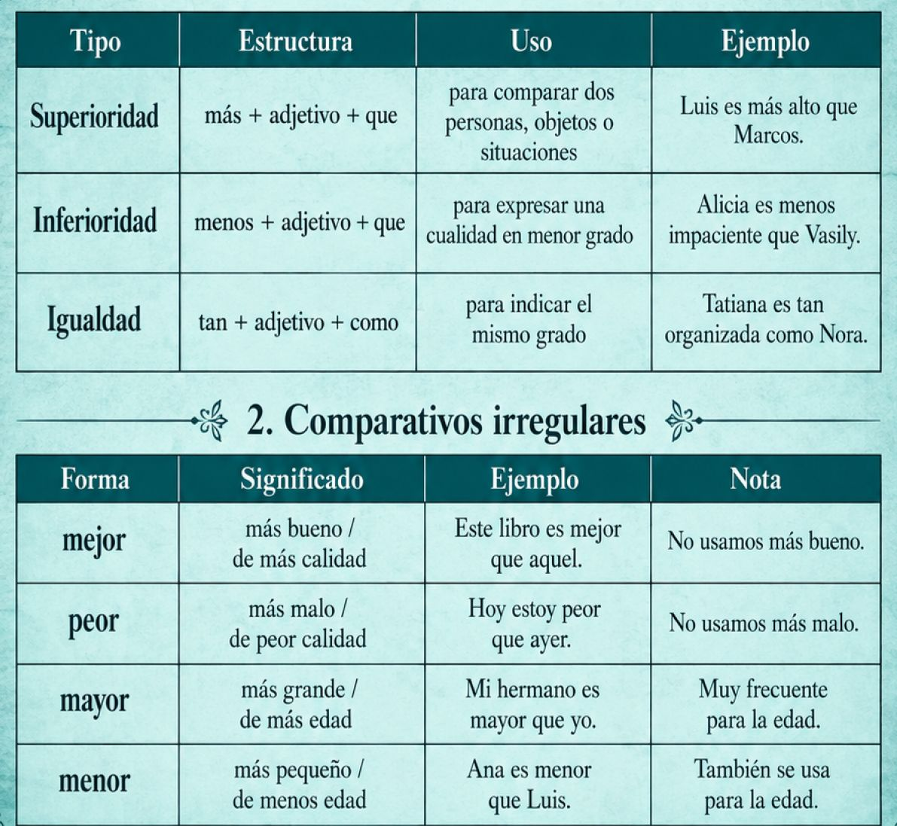
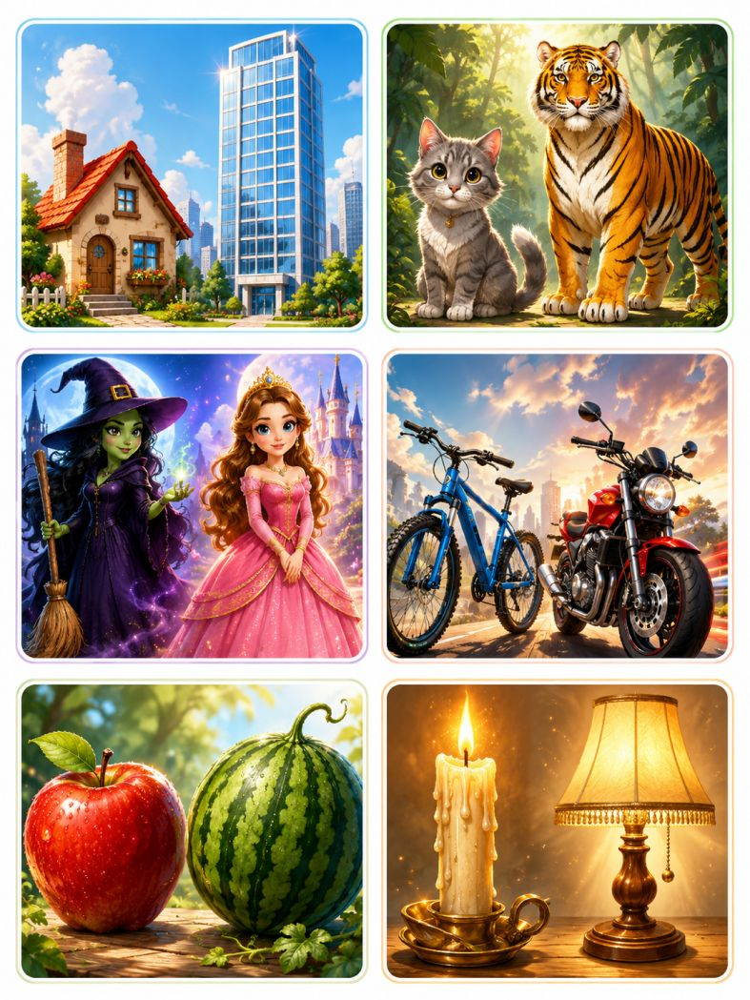
EjercicioCompleta con mejor que, peor que o tan… como
Madrid es grande mi ciudad.
El tren es rápido el caballo.
Esta paella está buena la de ayer.
El informe de Luis es claro el informe de Petrovich.
La estatua habla lento una persona normal.
Para mí, caminar por el Retiro es interesante quedarse en casa.
Este mapa es útil el mapa viejo.
La misión de Madrid es difícil la misión anterior.
EjercicioUsa las palabras para escribir frases con mejor que, peor que o tan… como
Modelo: el coche / rápido / el caballo → El coche es más rápido que el caballo.
Madrid / grande / mi ciudad →
El Parque del Retiro / bonito / la Plaza Mayor →
Esta estatua / tranquila / la otra estatua →
El tren fantasma / misterioso / la fortaleza →
La paella de hoy / buena / la paella de ayer →
El informe nuevo / claro / el informe viejo →
Aquí hay algo misterioso...
EjercicioLee la carta y contesta verdadero o falso
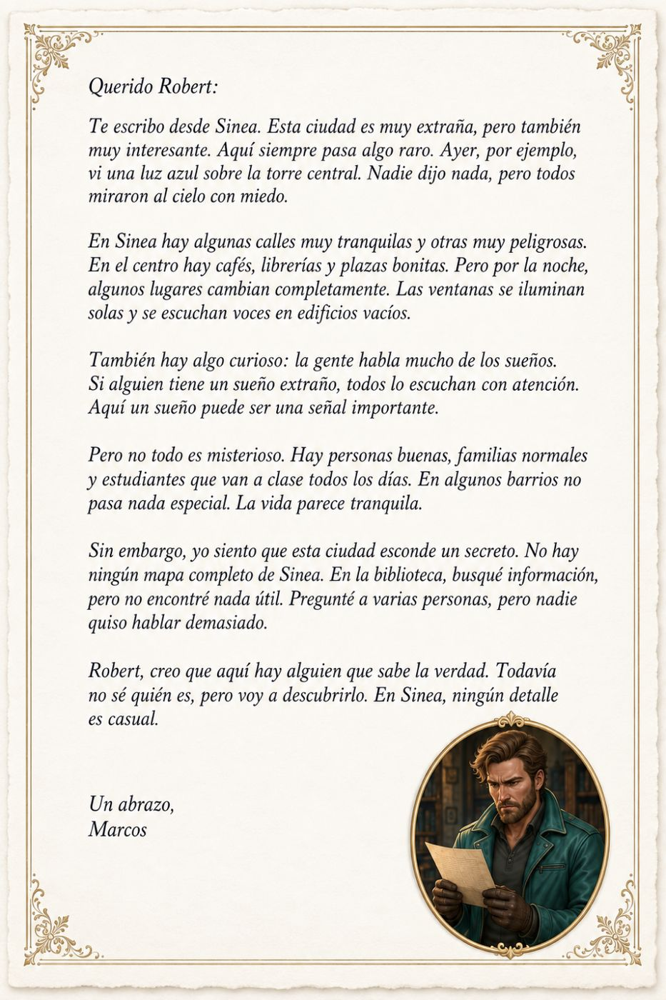
- En Sinea nunca pasa nada raro.
- Marcos vio algo azul sobre la torre central.
- Nadie quiso hablar demasiado con Marcos.
- Marcos encontró algo útil en la biblioteca.
EjercicioCompleta con algo, nada, alguien, nadie, ningún
En Sinea siempre pasa raro.
Ayer Marcos vio azul sobre la torre central.
dijo nada, pero todos miraron al cielo.
En algunos barrios no pasa especial.
Marcos buscó información en la biblioteca, pero no encontró útil.
Marcos cree que hay que sabe la verdad.
En Sinea, detalle es casual.
Marcos preguntó a varias personas, pero quiso hablar demasiado.
Si tiene un sueño extraño, todos lo escuchan.
Robert todavía no sabe sobre el secreto de Sinea.
Ejercicio4. Relaciona
1. algo
2. nada
3. alguien
4. nadie
A. Una persona no específica.
B. Ninguna cosa.
C. Ninguna persona.
D. Una cosa no específica.
EjercicioCompleta las frases con tus ideas.
En Sinea hay algo .
En la biblioteca no hay nada .
Alguien sabe .
Nadie quiere .
Marcos busca algo .
EjercicioCompleta el texto con las palabras de la lista.
Palabras: algo — algunas — alguien — todos — otras — algún — nadie — ninguna — otra
Algo no está bien en este mundo
no está bien en este mundo. En calles hay mucho silencio, pero camina rápido y mira a con miedo. Algunas personas hablan poco, no dicen nada.
En lugar de la ciudad, una puerta se abre sola. sabe por qué. escucha un ruido extraño, pero no ve a persona cerca.
En la plaza hay estatuas. Normalmente no se mueven, pero hoy una estatua mira a la gente. estatua tiene un plato de paella en la mano. Ningún turista entiende qué pasa.
Luis camina por Madrid y observa todo. Ve raro en el parque, pero no dice nada. Después escucha una voz:
— debe cerrar la puerta mágica.
Luis mira a su alrededor. No hay . Solo hay árboles, bancos y sombras.
Entonces comprende importante: este mundo parece normal, pero no lo es. Alguna fuerza extraña está cambiando la ciudad. Luis no tiene duda: debe actuar rápido.
Gramática
El imperativo: tú y usted
1. ¿Para qué usamos el imperativo?
Usamos el imperativo para dar órdenes, instrucciones, consejos o invitaciones.
Ejemplos: Lee el texto. · Escucha el diálogo. · Mira la imagen. · Tome asiento, por favor. · Hable más despacio, por favor.
2. Imperativo con TÚ
Usamos tú con amigos, familiares, compañeros o personas cercanas.
Verbos en -AR: hablar → habla
Habla más despacio. · Mira la pizarra. · Escucha la canción.
Verbos en -ER: comer → come
Come algo. · Lee el texto. · Aprende las palabras.
Verbos en -IR: vivir → vive
Vive tranquilo. · Escribe tu nombre. · Abre el libro.
3. Imperativo con USTED
Usamos usted en situaciones formales o con personas desconocidas.
Verbos en -AR: hablar → hable
Hable más despacio, por favor. · Mire la imagen. · Escuche la pregunta.
Verbos en -ER: comer → coma
Coma algo. · Lea el texto. · Aprenda las palabras.
Verbos en -IR: vivir → viva
Viva tranquilo. · Escriba su nombre. · Abra el libro.
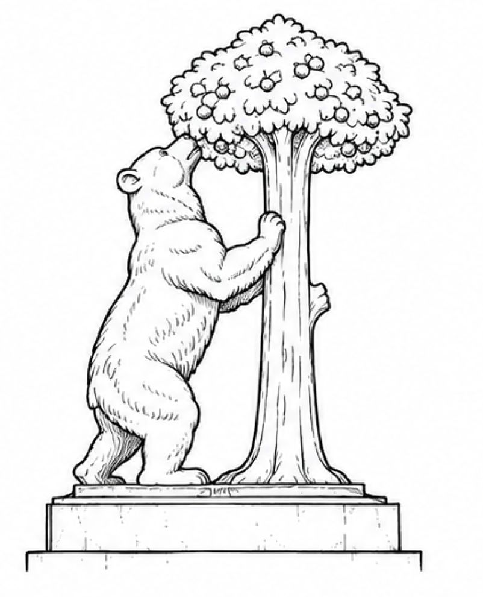
Palabras indefinidas y negativas
ALGO — usamos algo para hablar de una cosa no específica.
Hay algo raro sobre la mesa. · Quiero comer algo. · Veo algo en la ventana.
NADA — usamos nada para negar una cosa.
No hay nada en la heladera. · No entiendo nada. · Hoy no quiero hacer nada.
ALGUIEN — usamos alguien para hablar de una persona no específica.
Quiero conocer a alguien interesante. · Hay alguien en la puerta. · Alguien llamó por teléfono.
NADIE — usamos nadie para negar una persona.
No hay nadie en casa. · Nadie sabe la verdad. · No conozco a nadie en esta ciudad.
ALGÚN / ALGUNO / ALGUNA / ALGUNOS / ALGUNAS — usamos estas palabras para hablar de una cantidad no exacta.
¿Tienes algún amigo alemán? · Tengo alguna idea. · Algunos estudiantes hablan español. · En Sinea hay algunas calles peligrosas.
NINGÚN / NINGUNO / NINGUNA — usamos estas palabras para negar una cantidad.
No tengo ningún problema. · Ninguno de ustedes tiene la razón. · No conozco ninguna ciudad como Sinea.
Comparación en español
MÁS + ADJETIVO + QUE — una cualidad en mayor grado.
Luis es más alto que Marcos. · Esta casa es más grande que aquella. · El tigre es más fuerte que el gato.
MENOS + ADJETIVO + QUE — una cualidad en menor grado.
Marcos es menos serio que Alicia. · La bicicleta es menos rápida que la moto. · Este ejercicio es menos difícil que el otro.
TAN + ADJETIVO + COMO — la misma cualidad.
Alicia es tan inteligente como Marcos. · La princesa es tan elegante como la reina. · Este libro es tan interesante como aquel.
MEJOR QUE — para comparar calidad.
Este libro es mejor que aquel. · El café de esta cafetería es mejor que el café de la estación.
PEOR QUE — para comparar mala calidad o una situación negativa.
Este día es peor que ayer. · Esta idea es peor que la anterior.
MAYOR QUE — para comparar edad o tamaño de forma más formal.
Mi hermano es mayor que yo. · Esta ciudad es mayor que aquella.
MENOR QUE — para comparar edad o tamaño de forma más formal.
Ana es menor que Luis. · Este problema es menor que el anterior.
Cultura
La ciudad de Madrid
Lee el texto.
Madrid es la capital de España. Es una ciudad grande, moderna y muy activa. En Madrid hay museos, parques, plazas, teatros, restaurantes y muchos monumentos famosos.
Madrid nació en la Edad Media. Su origen está en el siglo IX, cuando el emir Muhammad I de Córdoba fundó una fortaleza musulmana llamada Mayrit. Esta fortaleza estaba cerca del río Manzanares. Con el tiempo, el lugar creció y se convirtió en una ciudad importante.
Hoy Madrid es una ciudad con mucha historia. En el centro está la Plaza Mayor, una plaza muy famosa del Madrid antiguo. También está la Puerta del Sol, un lugar muy conocido y siempre lleno de gente. Allí muchas personas se reúnen para celebrar el Año Nuevo.
Otro monumento muy famoso es la Puerta de Alcalá. Fue construida en el siglo XVIII y está cerca del Parque del Retiro. Es uno de los símbolos de Madrid.
Madrid también tiene el Palacio Real, uno de los palacios más importantes de Europa. Cerca de allí está la Catedral de la Almudena. En el Parque del Retiro hay jardines, un lago y estatuas. Es un lugar ideal para caminar, descansar o pasear en barca.
Una curiosidad de Madrid es su escudo: aparece un oso apoyado en un árbol llamado madroño. Por eso, la estatua de El Oso y el Madroño es otro símbolo de la ciudad. También es curiosa la Gran Vía, una calle con muchos teatros, tiendas y edificios elegantes.
Madrid es una ciudad para caminar, mirar, aprender y disfrutar. Tiene historia antigua, vida moderna y una cultura muy rica.
Historieta
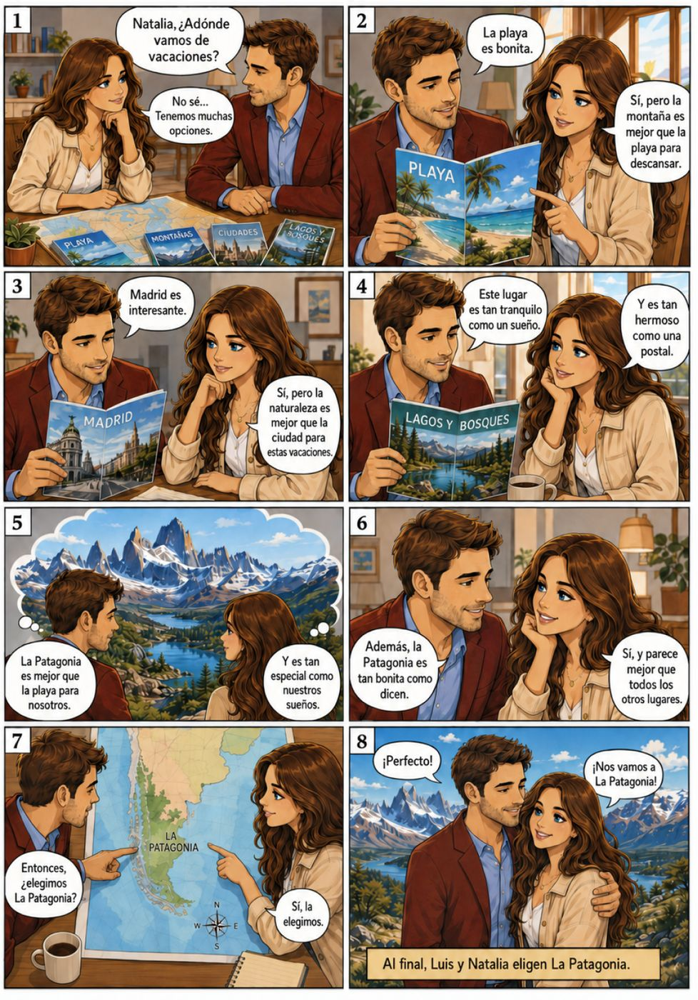
Notas importantes
Estatuas y monumentos de Madrid
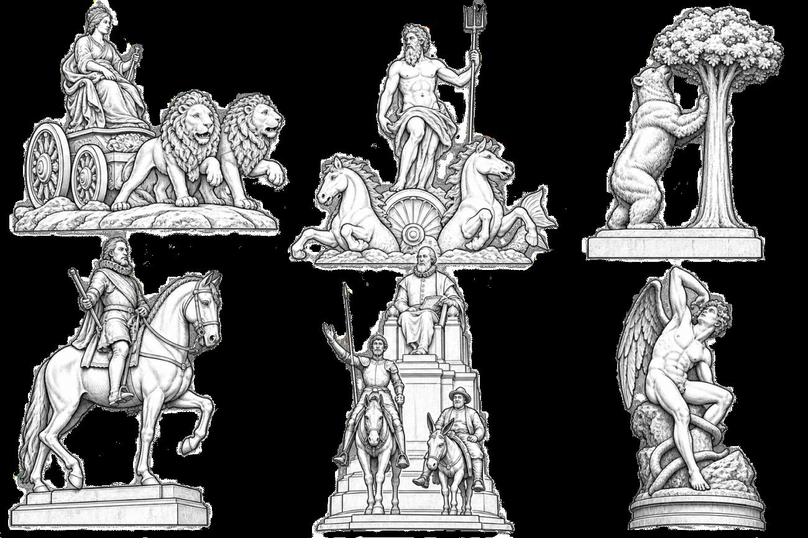
- La Cibeles
- representa a la diosa Cibeles en un carro tirado por dos leones. Es uno de los símbolos más famosos de Madrid.
- La fuente de Neptuno
- representa a Neptuno, dios romano del mar. Lleva un tridente y aparece sobre un carro.
- El Oso y el Madroño
- es uno de los principales símbolos de Madrid. Representa un oso apoyado en un madroño.
- La estatua de Felipe III
- está en la Plaza Mayor. Representa al rey Felipe III montado a caballo.
- El monumento a Cervantes
- está dedicado al escritor Miguel de Cervantes. También aparecen Don Quijote y Sancho Panza, los personajes más famosos de su novela.
- El Ángel Caído
- está en el parque del Retiro. Representa la caída de Lucifer y es una de las estatuas más curiosas de Madrid.